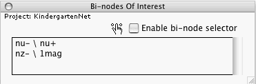

This window allows you to specify for which bi-nodes you wish Quantum Fog to calculate a joint probability distribution.
If
then a new row with the string "x_1\x_2" appears in the above window.
If
then the selected row disappears.
When you press Go Forward, Quantum Fog calculates the joint probability distributions for those bi-nodes that are listed in the above window.